December 1 & 2, 2017
| Our friends Christian and Kate held their
wedding on the first weekend of December, and what a lovely affair it was.
We were blessed to attend both the rehearsal dinner and the wedding
festivities. It was an amazing weekend, one we'll never
forget! |
|
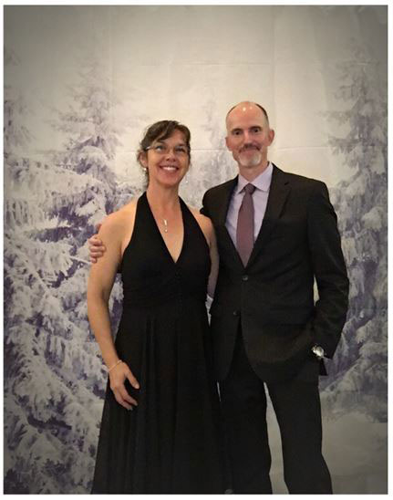 |
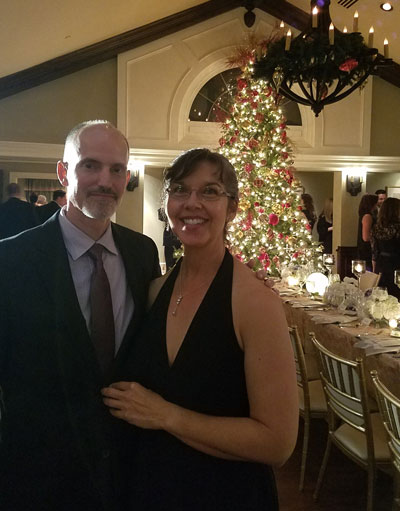 |
| At the photo booth during the rehearsal dinner | Near the beautiful Christmas tree in the rehearsal dinner area. |
|
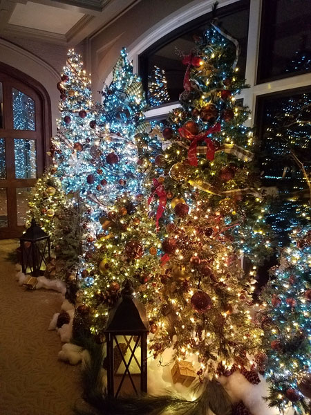 |
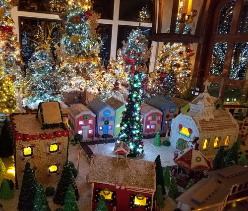 |
|
Scenes from the lobby of the OKC Golf & Country Club, where the rehearsal dinner was held. Magnificent! |
|
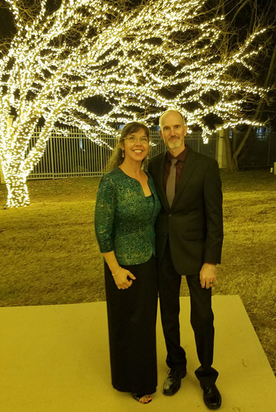 |
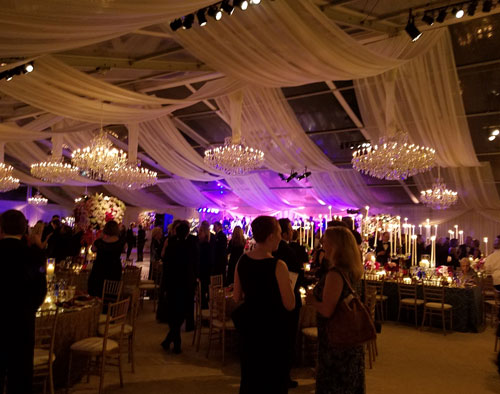 The reception was the most grand and lovely event either of us have ever seen. (Or likely will ever see again!) This was all set up inside a huge tent, it was incredible. |
| Fast-forward to the next evening, here we are arriving at the reception. | |
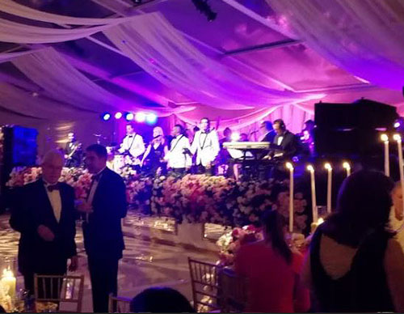 Also incredible was the band, they were experts at getting people to
dance and enjoy |
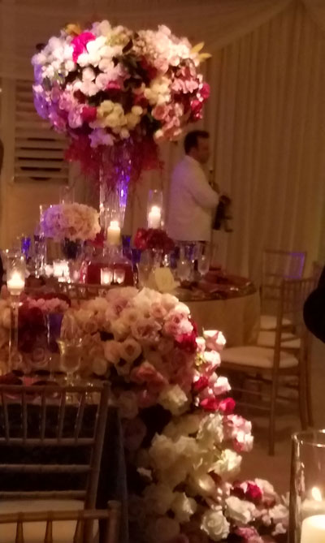 |
| One of the many cascades of beautiful flowers that decorated the area. | |
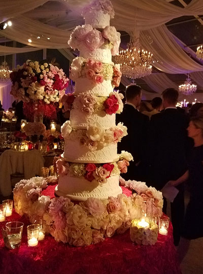 |
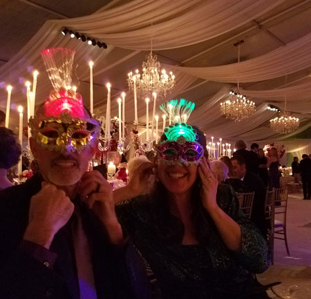 Between each course of the meal, a new set of party favors was
distributed |
| The wedding cake | |
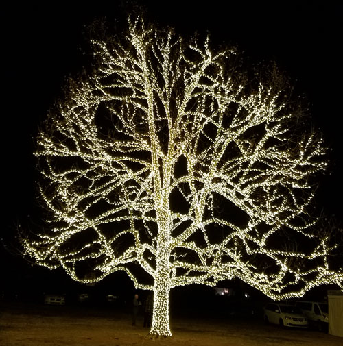 |
|
| There were two huge trees wrapped in lights all the way out to the tips of
the limbs. You could see them from miles away. The trees alone were very impressive, but so was everything about this magical event. |
|